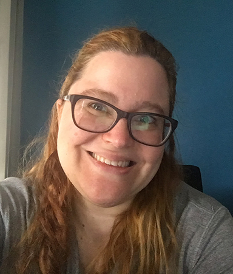

Adriana Cerdeira
Desenvolvedora Web e Professora
Formação Universitária
Julho de 2003 - Publicidade e Propaganda Pontifícia Universidade Católica de São Paulo
Especialização
Julho de 2004 - Curso Portfólio - Escola Superior de Propaganda e Marketing
Julho de 2006 - Cursos Livres de Edição Módulos I,II e Avançado - SENAC
Março de 2008 - Produção para TV e Vídeo - SENAC
Março de 2008 - Oficina de Roteiro - SENAC
Julho de 2014 - Formação Adobe Web CS6 - HTML e CSS - SENAC
Conhecimento de Informática
Criação e produção de websites, vídeo e peças gráficas. Interesso-me por programas gráficos de computador e tenho facilidade em aprender a utilizar programas novos. Minha vivência em Informática é de Windows e Mac, e além do pacote Office, utilizo programas de computação gráfica, edição de imagens e áudio e Web Design como o a suíte Adobe, Final Cut, Motion, Avid, Sony Architect, Notepad++, Sublime Text além do Trados e Wordfast para traduções.
Conhecimento de HTML, CSS, PHP, MySQL, Javascript e JQuery.
Vivência de Idiomas
Inglês, Italiano e Espanhol fluentes. (Escrita, leitura e fala) Exames de Inglês: TOEFL, FCE, SAT, ACT.
Atuo como tradutora free-lancer para empresas como a Multivozes, Centro Latino de Línguas, Bureau Translations entre outras.
Experiência Profissional
Julho de 2018 - atual
Professora particular de informática. Dou aulas de uso do Windows, MacOs, e IOS para aqueles que não sabem usar nem o básico destes sistemas. Dou aulas personalizadas no que a pessoa precisa pois tenho bom conhecimento dos sistemas e dos programas mais usados nestes sistemas.
Além disso ofereço configurações dos sistemas, de e-mail, instalação do Pacote Office e configuração. Mais informações sobre o que ofereço podem ser encontrados no site http://adrianacerdeira.info que foi desenvolvido por mim.
Janeiro 2017 - atual
Assistência e Logística - R&C Novos Negócios & Oportunidades, R&C Comunicação e Ribeiro Comunicação, 3 empresas do mesmo grupo. A R&C Novos Negócios e Oportunidades faz conexões entre entidades, empresas, pessoas, para o desenvolvimento de novos negócios. Fazendo a ponte entre oportunidades e investimentos para o sucesso de todos os envolvidos. Trabalhando com instituições nas áreas de infraestrutura e desenvolvimentos imobiliários.
A R&C Comunicação trabalha com Comunicação, seja qual for o objetivo do cliente. Trabalha com a negociação de mídia, manutenção e mídia sociais, criação de sites, criação de mídia digital, impressa e audiovisual.
A Ribeiro Comunicação trabalha com a sonorização de Igrejas.
Nas três empresas do grupo sou responsável por prospecção de clientes novos, contato e manutenção de clientes atuais, desenvolvimento dos 3 sites (cuja programação e manutenção foi feita por mim) e manutenção da mídia social e e-mail marketing da R&C Comunicação e Ribeiro Comunicação.
Sou responsável por manutenção, organização e muitas vezes obtenção da informação dos negócios sendo realizados e parte logística da realização de palestras e reuniões.
Junho 2016 - Janeiro de 2017
Assistência Freelance à Assessoria de Imprensa da Banda de Heavy Metal Armored Dawn para sua divulgação em revistas Europeias, Asiáticas e Australianas. Responsável por pesquisar revistas do segmento, achar contatos, fazer contato, negociar o envio de CD da banda com as revistas além de entrevista com a banda, envio de material às revistas. Administrando a arte para as revistas.
Intérprete para a manager da banda em viagem de 23 dias para França, Inglaterra, Irlanda, Áustria, Alemanha Grécia e Portugal em reuniões para negociar a participação da banda em festivais assim como a continuação da cobertura na mídia.
Desde Maio de 2012
Proprietária da Top-notch Web Design & Translations onde trabalho com desenvolvimento de sites e traduções. Responsável pela codificação de sites, tratamento de imagens, tradução de documentos corporativos e acadêmicos.
Desde Junho de 2009
Tradutora Free-lancer para a Multivozes, CLL, Bureau Translations entre outras. Entre as empresas para as quais faço traduções através destas agências estão a Intel, Sanofi Aventis, Natura, Aon Affinity entre outras.
De Julho de 2008 à Abril de 2009
Assistente de Edição e Roteiros na Atelier de Filmes. Responsável pelo tratamento de imagens, vídeo e áudio. Edição de vídeo. Logging de vídeo.
Março e Abril de 2008
Assistente de Produção em comercial e institucional na Atelier de Filmes. Responsável pela contratação de equipe, equipamentos e serviços. Controle orçamentário. Orientação da equipe em dias de filmagens.
Agosto de 2007
Assistência de Produção de Comercial da Lupo, “Lupo é Tudo”, na Porão Filmes. Responsável pela contratação de equipe, equipamentos e serviços. Controle orçamentário. Orientação da equipe em dias de filmagens.
Janeiro de 2005 à Janeiro de 2007
Trabalhei como Assistente de Produção na Talento Digital Áudio e Vídeo, na produção do programa semanal em formato de documentário, “Mar Sem Fim,” veiculado na TV Cultura aos domingos e na produção dos outros programas da Produtora para os canais SPORTV e Canal 21. Responsável pela contratação de equipe, equipamentos e serviços. Controle orçamentário. Orientação da equipe em dias de filmagens. Além de demais tarefas administrativas necessárias para o funcionamento da empresa.
Registro Profissional
- Publicitária
- Radialista- Função: Assistente de Produção
- Membro da Associação Brasileira de Profissionais de Internet - Abraweb
Experiências no Exterior
Morei um ano e meio na Itália estudando primeiro na International School of Trieste e depois na Escola pública Italiana. Cursei o freshman year do Beloit College em Beloit, Wisconsin, EUA de agosto de 1997 a maio de 1998.
Trabalhei como voluntária na biblioteca do Centro Internacional de Física Teórica, The Abdus Salam ICTP, em Trieste na Itália durante três meses.